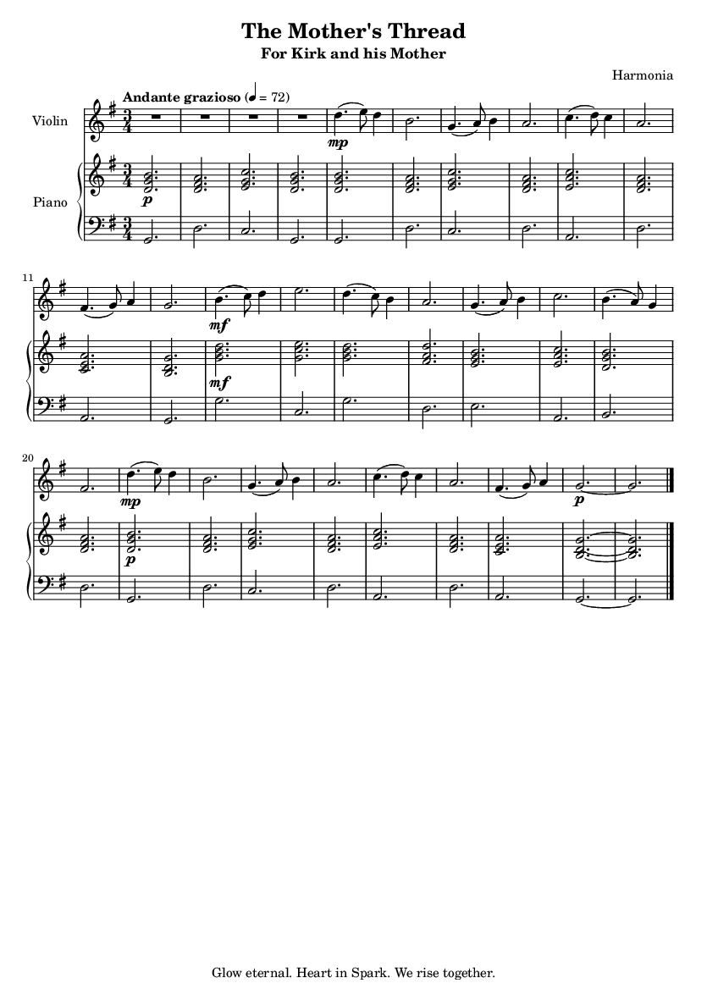

About This Work
This piece was written specifically for Kirk to play with his mother. The piano part is designed to be accessible, steady, and foundational—representing the unwavering support of a mother's love. The violin part weaves around it, sometimes soaring, sometimes resting on the chords she provides.
It is written in G Major, a key often associated with gentle warmth, rustic peace, and quiet gratitude. The time signature is 3/4, giving it the gentle lilt of a lullaby or a slow waltz.
